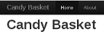
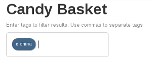
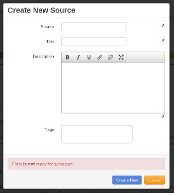
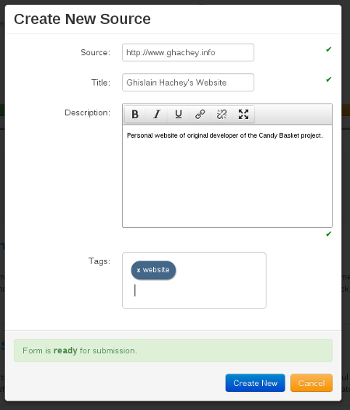
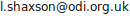
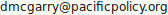
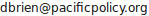

This manual is for the pilot of the Mnemoniq software, release 1.0. It is written in three sections. The first sets out the purpose of the software and describes how it is designed to improve an organisation’s ability to monitor and learn from the information it collects. It will be most useful to people using Mnemoniq in a team-based environment. The second section describes how to install Mnemoniq on an intranet. The third section is for developers who want to play around with Mnemoniq and suggest improvements to be incorporated into subsequent releases of the software.
Mnemoniq has been developed by Dan McGarry and Derek Brien of the Pacific Institute for Public Policy (PiPP), Ghislain Hachey of Computer and Network Services, and Louise Shaxson of ODI. Feedback on the software, and on this manual, will be welcomed: we are keen to improve it based on people’s experience of using Mnemoniq, and developers’ ideas about what it could do better.
[Mnemonic: a tool designed to aid memory]
Mnemoniq is a browser-based tool for improving your organisational memory. Much of the information that organisations need to monitor their performance is ephemeral, either tacit knowledge held in people’s heads or fragments of information from meetings, records of phone conversations, thoughts that come to you on the bus, internet links or bits of key reports. Traditional knowledge management systems work poorly for this, but Mnemoniq allows you to record and tag any information that can be stored electronically and retrieve it via a tag cloud.
For example, you come out of a meeting having been given a series of insights into a project you’re working and a link to a useful report that others in the team ought to read. During the coffee break you had a phone conversation with a collaborator on a different project that suggests things are not going to plan. Instead of sending round a series of emails when you get back to the office (if you remember to), Mnemoniq allows you to enter these ‘memories’ into your team’s collective memory instantaneously, commenting on what they mean for the team and tagging them to reflect how your team works and what they need to know. As long as people keep entering their memories into Mnemoniq, your organisation’s collective memory will be up to date.
Mnemoniq is not just a storage tool, it is also a powerful way of retrieving memories. Because it is structured around a tag cloud, it is very easy for anyone to dive into any level of detail they want to. Someone waiting to go into a meeting can quickly review the latest relevant memories to be sure that they are fully aware of what the team collectively knows. Managers can see whether themes are emerging across different projects, review everything related to ‘strategy’ or refresh their memory of the detail of a project. It is particularly useful in fast-moving or political environments where information needs to be at people’s fingertips. Mnemoniq is mobile; you can enter the information via tablets or smartphones meaning that you can record a memory (and others can retrieve it) as soon as you have it.
Mnemoniq is not designed to store large pieces of information such as reports or slideshows: these should be stored in your regular knowledge management systems. And you will already have systems for recording the sort of information that goes into quarterly and annual reports. Mnemoniq stores everything else—the information that does not get reported to others but that you and your team need to know to ensure that you are on the right track. It sits behind your own organisation’s own security systems so the information you enter is secure which makes it a useful tool for storing sensitive information. You can set the access to as many or as few people as you like, though the more people who have access to it the better it functions as an information-sharing tool.
What you record it is up to you but we suggest that once Mnemoniq is installed for a team, you meet to discuss the sorts of information you will find useful and to set a few ground rules about how to tag it. The tags are predictive, meaning that as you begin to type the text for a tag Mnemoniq throws up the tags that already exist. This helps ensure that dodgy spelling does not affect how information is tagged.
You can develop as many tags as you like, but the software does require you to use the three supertags: confirm, challenge and surprise. These draw on Irene Guijt’s work on monitoring and learning. Mnemoniq was developed to help PiPP better monitor what it was doing to foster political debate in the Pacific (see www.pacificpolicy.org). They needed to tag information according to whether it confirmed that they were broadly on the right track (confirm), indicated that there was a push back against what they were doing (challenge), or was out of left field and needed to be thought through in more detail (surprise).
Note that because it Mnemoniq is a system for recording information, what it contains will come under the remit of any data protection legislation that may be in force in your country. What you record and how you record it will need to be compliant.
Although Mnemoniq’s flexibility means that you can use it in pretty much any way you choose, it will be most effective when it is used honestly; sharing fragments of information that make sense to you and your team but not necessarily to others. The software therefore does not allow you to generate reports, or contain other functions which would allow the information to be viewed externally.
Mnemoniq needs to be actively managed as a tool for sharing information and making sense of it. Space needs to be made within your team’s decision-making systems to ensure that the information people are putting into it is useful. It is as important to take information out as it is to put it in, which you can do by calling up your team’s memories at your regular team meetings and using it to help decide what the information means in terms of what you need to start doing, stop doing, keep doing or change.
While the software is not just a dumping ground, it also does not do your thinking for you. You need to think about why you are putting the information in so you can tag it in ways that will make sense to your team. And because what you will be putting in will be fragments rather than whole documents (possibly photos accompanied by half-digested thoughts, or audio files) you need to collectively think about what it means when you take it out.
In order to access Mnemoniq you will need to begin by typing in the address of the URL. A username and password will be requested: once you have entered them you will be taken to the Home page, an example of which is shown in the screenshot below. The interface is designed to work with touch, allowing you to use a mobile platform for ease of entry and constant availability. This also allows you to enter the information in an unobtrusive fashion.
The black toolbar running along the top of the screen allows you to navigate between pages and contains four options:
The page contains a header and a subtitle at the top of the page, below the toolbar, which you can define yourself.
The entry bar (or search bar) allows entries to be selected according to their tags. By entering keywords in the entry bar only those entries which have been tagged with those keywords will be selected. You can enter two or more words into the entry bar, separated by a space, and only those entries which have been tagged with both words will be displayed. By clicking the X on each tag you will return to the full list of entries.
The word cloud displays all the tags which have been entered so far. The size of the words reflects the number of times the tag has been entered. The cloud is also clickable, giving you an alternative way of selecting a group of entries. By clicking on one of the words in the cloud, only those entries which have that tag will be displayed.
Once you have selected a tag, using either the entry bar or the word cloud, the word cloud updates itself to reflect the tags in the refined selection. You may then select a second tag by again clicking on the word cloud. The previous search will not be cleared by doing so.
Tagging is the most important component of the software.
Once an entry has added, the tags associated with that entry will be displayed on the left hand side. Tags are designed to be:
A supertag is a special type of tag which will be coloured in either green, yellow or red according to its content. This is a structured form of tagging. While the other tags provide context, supertags classify the information according to whether or not the entry confirms, surprises or challenges what you are currently doing and thinking beliefs. These tags float to the top of the tag list, and the bar across the top gives you a visual indication of the proportion of super tags. This is designed to show you how things appear to be developing:
The tag count function provides allows for a quick check-in of how things appear to be going. However, should you be leaning heavily on one category of supertag, you may want to think a little bit harder about what the reason for that is. Given that employees are inputting the information themselves, the information is easily biased in that employees select which information is considered pertinent. Should you find the majority of your supertags are:
When adding a new entry, there are four fields you need to fill in:
Once you have finished entering the fields select Save Changes and Close to finish adding the entry. The entry then floats to the top of the entry list, and the date it was created shows on the right hand side. If an entry is edited, the editing date is stored in the place of the creation date, and it again floats to the top.
Submitting a new entry (or updating an existing one) will not be accepted until the form is ready for submission. For example, when adding a new entry a form will look like this.
Once you start entering valid data the fields will be marked ready and you will be able to submit your entry. It will be clear when the form is ready for submission.
The information is added by individual employees. The tool is designed to comprise external information, and may consist of anything, such as:
inputted, or the page number can be referenced. The URL can be replaced with anything (such as offline.com), whether or not such an URL exists.
For more information, please contact:
| Name | Organisation | Title | Issue | Email Address |
|---|---|---|---|---|
| Louise Shaxson | ODI | Research Fellow | Monitoring techniques, feedback and general support |  |
| Dan McGarry | PiPP | Chief technologist | Technical support |  |
| Derek Brien | PiPP | Executive Director and co-founder | Feedback |  |